Hello, here is things.
Here we first begin by taking the convolutions of the x and y difference filters. These are the magnitude outputs from taking the pointwise absolute value of the convolution output:
D_x output magnitude:
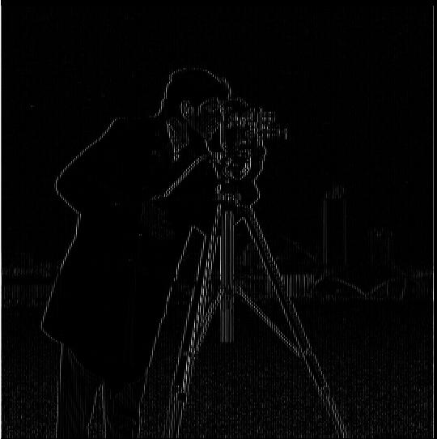D_y output magnitude:
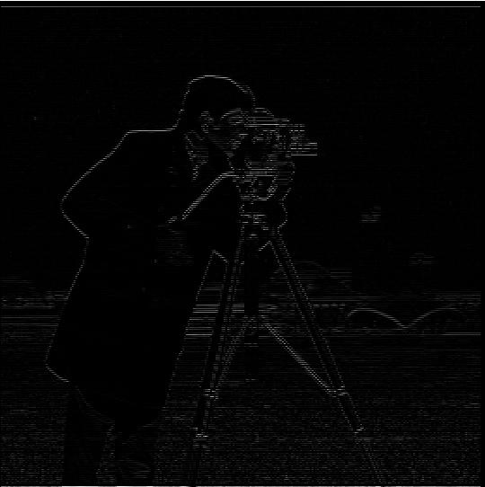We can now do some thresholding to remove some noise and get a clearer picture of the edges. Here we do this by applying thresholding such that elements below the 98.5th percentile of values are set to zero, and everything above is set to 1. This insures that only the most prominent edges are maintained.
D_x thresholded output magnitude:
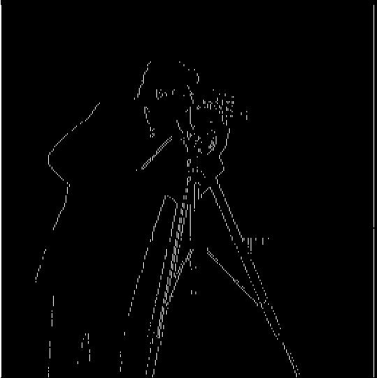D_y thresholded output magnitude:
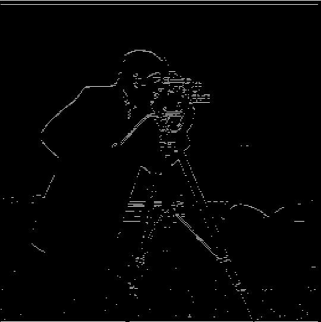We see below there are two primary changes in this formulation. First is that we generally have less edges detected. Note here that we used the 98th instead of the 98.5th percentile here and despite this, we actually get less noise in the grassy region. This is most noticable if we look at what the Dy output looks like before we threshold in both cases. We see that if we do not apply the gaussian filter, the very bottom on the image is filled with a lot of very fine details that we do not care about. The other major change is that on the edges we do preserve, the lines are thicker. This is simply a result of the gaussian filter blurring out the edges, making them encompass a wider region. We are still able to capture them desipte having lower frequency by applying this binary filtering, which accounts for relative differences across images.
Here we use a gaussian filter with k=3 and sigma=0 for cv2.getGaussianKernel.
Dx convolution magnitude output after applying gaussian filter:
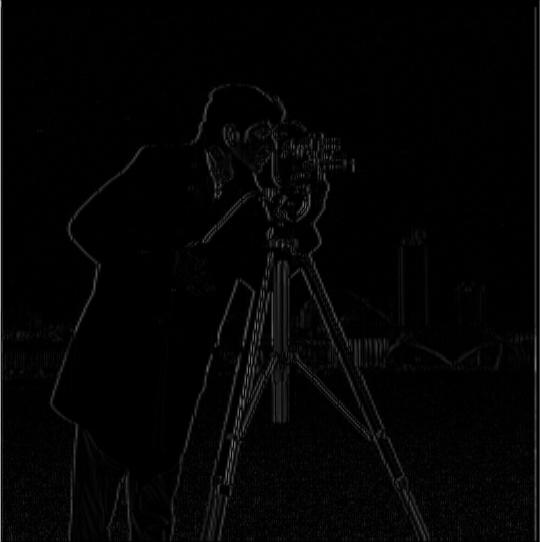Dy convolution magnitude output after applying gaussian filter:
Dx binary threshold via 98th percentile:
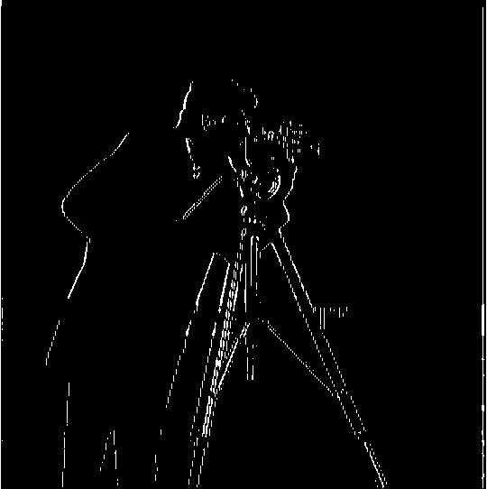Dy binary threshold via 98th percentile:
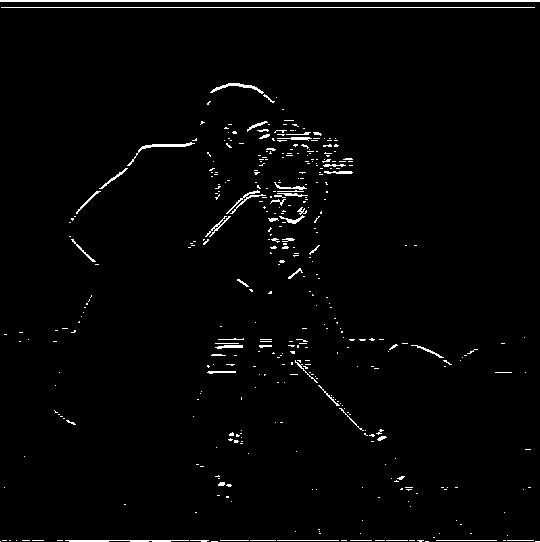Now to combine this in to a single convolution. We can simply convolve the gaussian and the edge filters together, then perform the convolution as before:
Output of combined Dx filter:
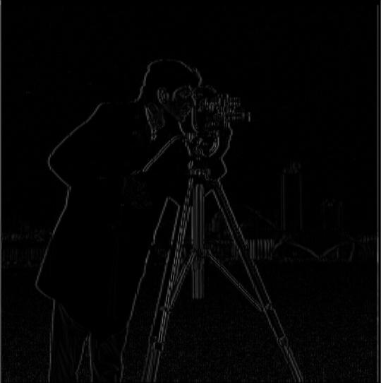Output of combined Dy filter:
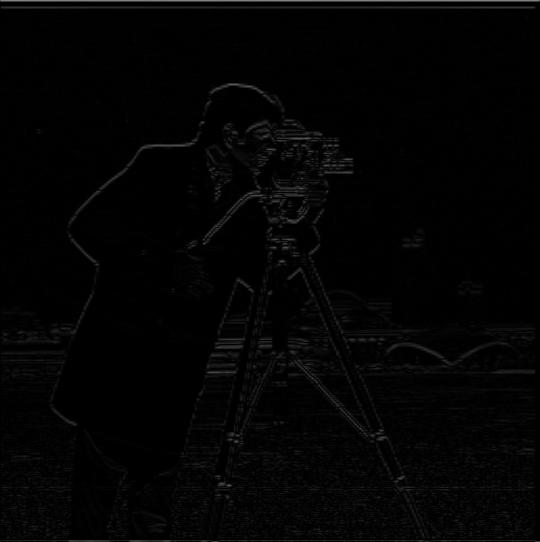Visually, it is clear that this is the same output, but we can further verify by taking the difference between this image and the old one where we did two setps:
magnitude of two step Dx filter minus one step combined Dx filter:
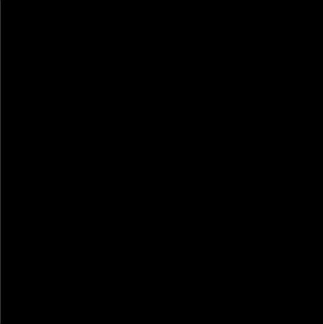magnitude of two step Dy filter minus one step combined Dy filter:
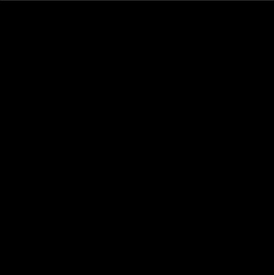Note in practice, it is likely that these will not always match perfectly due to floating point and machine errors as we are computing in a different order. Regardless, to the human eye, there should generally be no difference.
Here we obetain the unsharp mask filter via the formula: (1 + alpha)*id - alpha * gaussian_filer where alpha is a scalar value of our choice, id is the identity filter.
Here is an application of the filter onto taj.jpg.
Image before unsharp filter application:
alpha=1, 2:
alpha=3, 4:
alpha=5 vs original (alpha=5 on left):
Once again we are going to apply the filter. We see how the image in general becomes more jagged and grainy. Take note of the sand and rocks at the bottom, with fine patterns, that are more emphasized when we sharpen.
Image before unsharp filter application:
alpha=1, 2:
alpha=3, 4:
alpha=5 vs original (alpha=5 on left):
Now for fun let us try a needlessly high alpha value to see what happens. If we take some value like alpha=10, we can start to run into issues with some values blowing up in value. Here we see the image becomes way to grainy as we remove too many low frequencies:
Image before unsharp filter application:
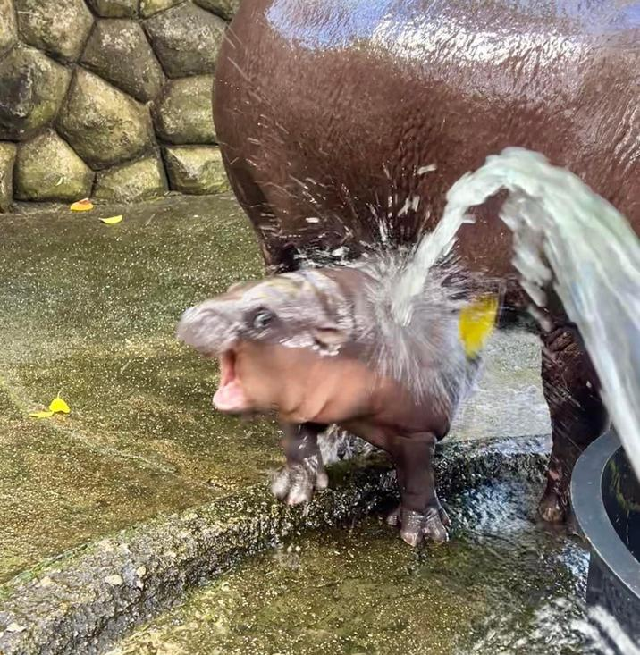alpha=2, 4:
alpha=6, 8:
alpha=10 vs original (alpha=10 on left):
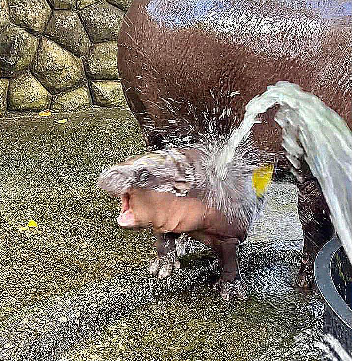Now let us take a sharp image, downsample, then resharp.
A rather sharp Moo Deng:
A gaussian Moo Deng:
A resharpened Moo Deng using alpha=5. We do not recover the original as blurring will lose information. Regardless, we see that we can recover some subtle details such as the soap bubbles on the nose, and the light reflections on the back. This resembles the original image more than the blurred one because of this.
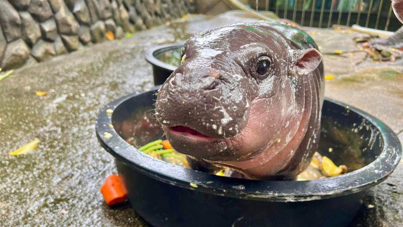Example one:
Example two:
Example three: failure case
Although these two layer on top of each other, I consider this to be a failure. The reason why is that the two images are too disjoint in their content, such that the output comes to just resemble a transparent image placed on another, rather than having frequencies mask over each other. Because the content is so disjoint, the two have no real important features to mask on each other. The bowling ball holes are too noticable from close distances because of this.
Let us do some fourier analysis on the Eisenhower and Al Gore images:
A 2D DFT of Al Gore (left) and Eisenhower (right):
 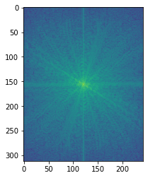
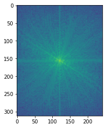
A 2DFT of a very low frequency Al Gore (left) and high frequency Eisenhower (right):
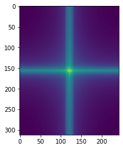 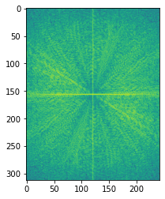And so when we find the right mixture of high and low frequencies we end up with:
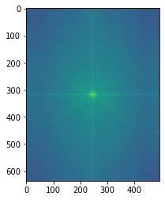Here we have both a strong emphasis along high and low frequencies.
Thank you
Here is a plot showing some of the results frm the figure in the paper:
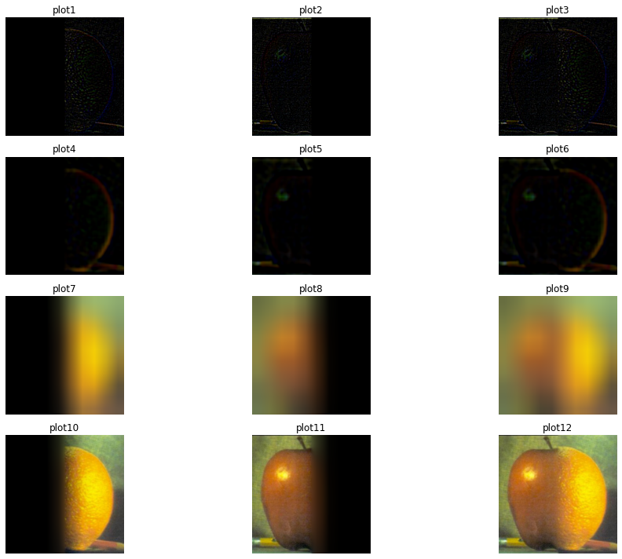Now let us do some multiresulution blending with some irregular masks. Let us start with a simple circular mask. Here we have a sun, and a yellow dude. We want him to blend into the sun to look like the sun from the teletubbies. To do this we can define a circular mask. If done correctly, we should have a smooth transition between the different yellow shades:
Multiresultion blending with circular mask:
Output after blending:
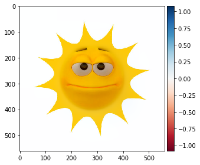